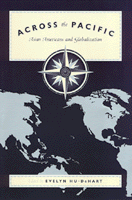

How transnational relationships and interactions in Asian American communities are manifested
How transnational relationships and interactions in Asian American communities are manifested


 How transnational relationships and interactions in Asian American communities are manifested
How transnational relationships and interactions in Asian American communities are manifested

|  |
Across the PacificAsian Americans and Globalizationedited by Evelyn Hu-DeHartpaper EAN: 978-1-56639-824-4 (ISBN: 1-56639-824-X) |
"[These essays] should provide some answers to the field of Asian American studies, which has been both energized and troubled by recent trends toward transnationalism and diasporic studies, and which in other ways has been internationalizing its focus. They should also address some questions for the field of Asian studies, whose practitioners are now wondering out loud how, precisely by internationalizing themselves, Asian Americans, given their biculturalism and transnationality, might help frame new approaches to the study of Asia and its subjects."
—Evelyn Hu-DeHart, from the Introduction
Across the Pacific explores in descriptive and critical ways how transnational relationships and interactions in Asian American communities are manifested, exemplified, and articulated within the international context of the Pacific Rim. In eight ground-breaking essays, contributors address new meanings and practices of Asian Americans in the global transformation of the post-Civil Rights, post-Cold War, postmodern and postcolonial era.
Asian Americans have always been a trans-Pacific community—and are now more than ever. Since the changes in immigration laws in 1965, after decades of exclusion from the United States, Asians are once more immigrating to the U.S. Entering the U.S. upon the culmination of the Civil Rights movement, Asians becoming Asian Americans have joined a self-consciously multicultural society. Asian economies have roared onto the world stage, creating new markets while circulating capital and labor at an unprecedented scale and intensity, thereby helping drive the forces of modern globalization.
Considering issues of diaspora, transmigrancy, assimilation, institutionalized racism, and community, Across the Pacific offers essays on such topics as the impact of the new migrations on Asian American subjectivity and politics, the role of Asian Americans in Pacific rim economies, and cultural expressions of dislocation among contemporary Asian American writers. It asks: If Asian Americans are to assume the role of bridge builders across the Pacific, what are the opportunities, the risks, the promises, the perils?
Excerpt available at www.temple.edu/tempress
Read a review from The Journal of American Ethnic History, Winter 2002, written by Karen J. Leong (pdf).
Foreword – Vishaka N. Desai
Acknowledgments
1. Introduction: Asian American Formations in the Age of Globalization – Evelyn Hu-DeHart
2. Asians on the Rim: Transnational Capital and Local Community in the Making of Contemporary Asian America – Arif Dirlik
3. Chinese Americans in the Formation of the Pacific Regional Economy – Lucie Cheng
4. Asian American Economic Engagement: Vietnam Case Study – Le Anh Tu Packard
5. Asian American Activism and U.S. Foreign Policy – Paul Y. Watanabe
6. Exclusion and Inclusion: Immigration and American Orientalism – Neil Gotanda
7. Asian Americans at the Intersection of International and Domestic Tensions: An Analysis of Newspaper Coverage – Setsuko Matsunaga Nishi
8. Inventing the Earth: The Notion of "Home" in Asian American Literature – Luis H. Francia
About the Contributors
 | Evelyn Hu-DeHart is Professor and Chair of Ethnic Studies and Director of the Center for Studies of Ethnicity and Race in America at the University of Colorado at Boulder. |
Contributors: Lucie Cheng, Arif Dirlik, Luis Francia, Neil Gotanda, Evelyn Hu-DeHart, Setsuko Matsunaga Nishi, Le Anh Tu Packard, and Paul Watanabe.
Asian American Studies
Political Science and Public Policy
Asian Studies
Asian American History and Culture, edited by K. Scott Wong, Linda Trinh V�, and Cathy Schlund-Vials.
Founded by Sucheng Chan in 1991, the Asian American History and Culture, series has sponsored innovative scholarship that has redefined, expanded, and advanced the field of Asian American studies while strengthening its links to related areas of scholarly inquiry and engaged critique. Like the field from which it emerged, the series remains rooted in the social sciences and humanities, encompassing multiple regions, formations, communities, and identities. Extending the vision of founding editor Sucheng Chan and emeriti editor Michael Omi and David Palumbo-Liu, series editors K. Scott Wong, Linda Trinh V�, and Cathy Schlund-Vials continue to develop a foundational collection that embodies a range of theoretical and methodological approaches to Asian American studies.
© 2015 Temple University. All Rights Reserved. This page: http://www.temple.edu/tempress/titles/1456_reg.html.